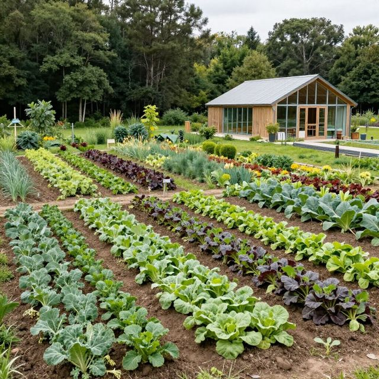
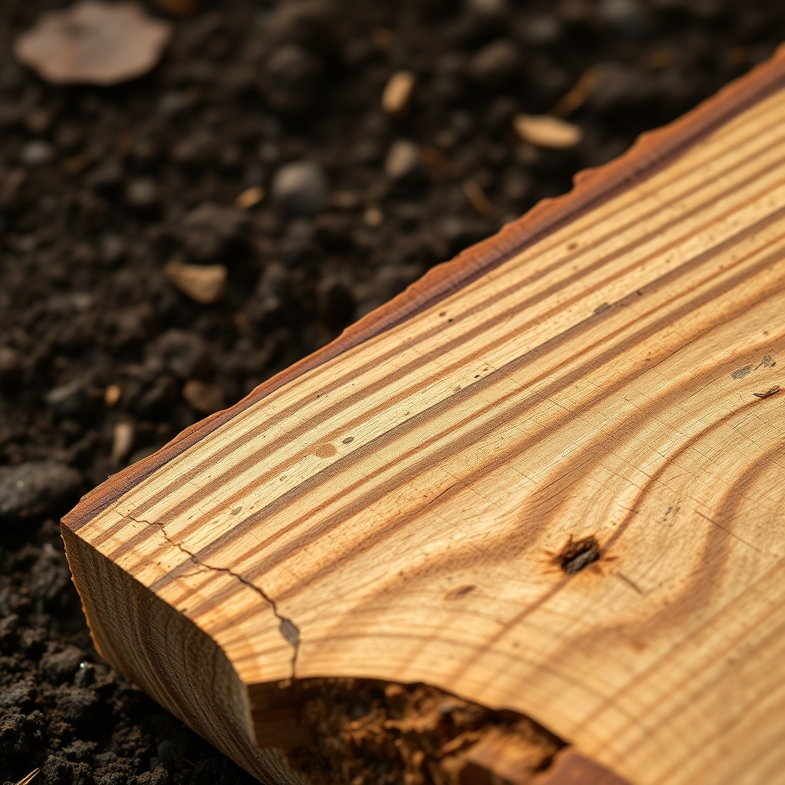
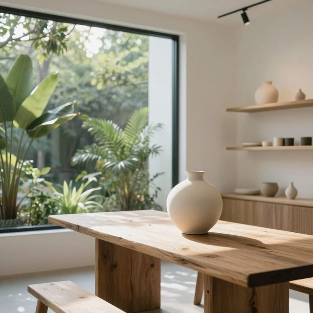
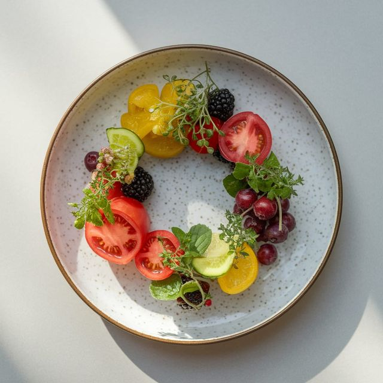

01. The Origin
Everything starts with the land. Our regenerative farm and managed forests provide the raw soul for every piece we create.


02. The Creation
In our atelier, logic meets hand-eye coordination. We transform raw textures into sophisticated, functional art.
03. The Experience
The final destination. Whether a curated boutique or a seasonal table, we celebrate the finished harvest.

